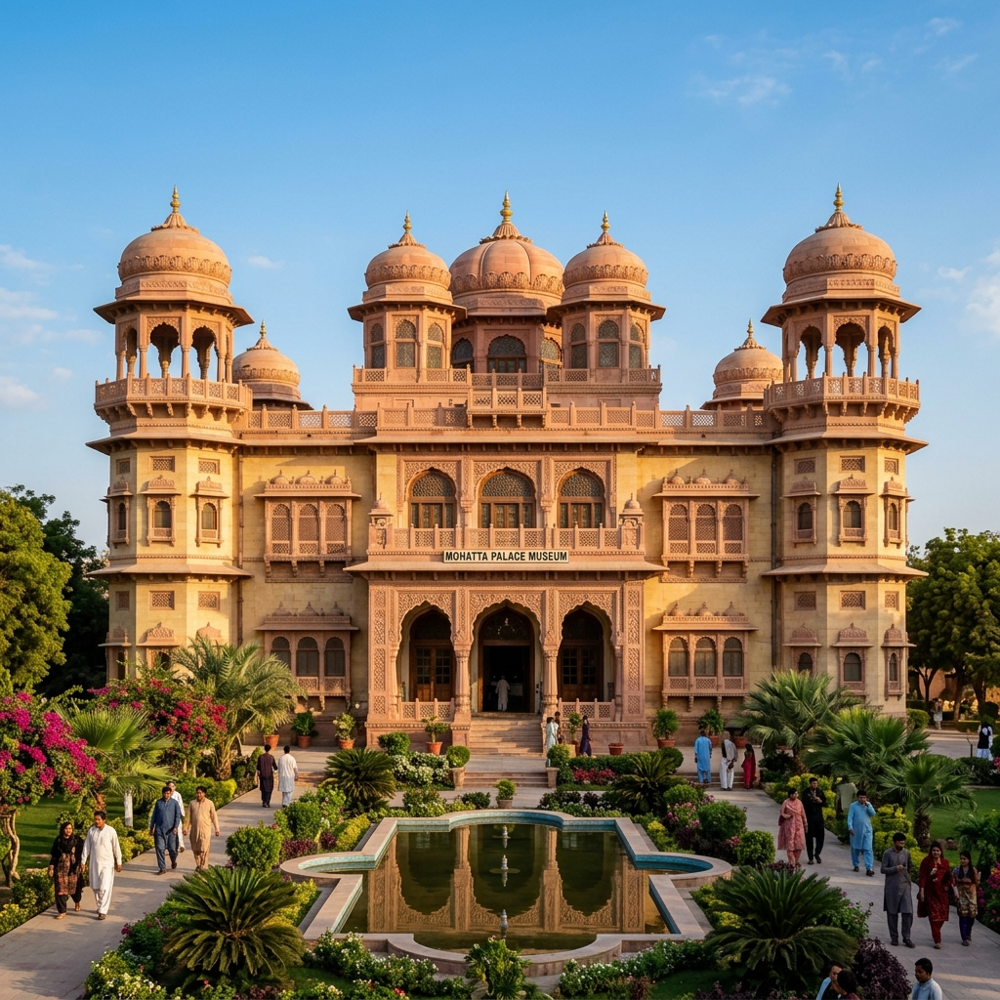
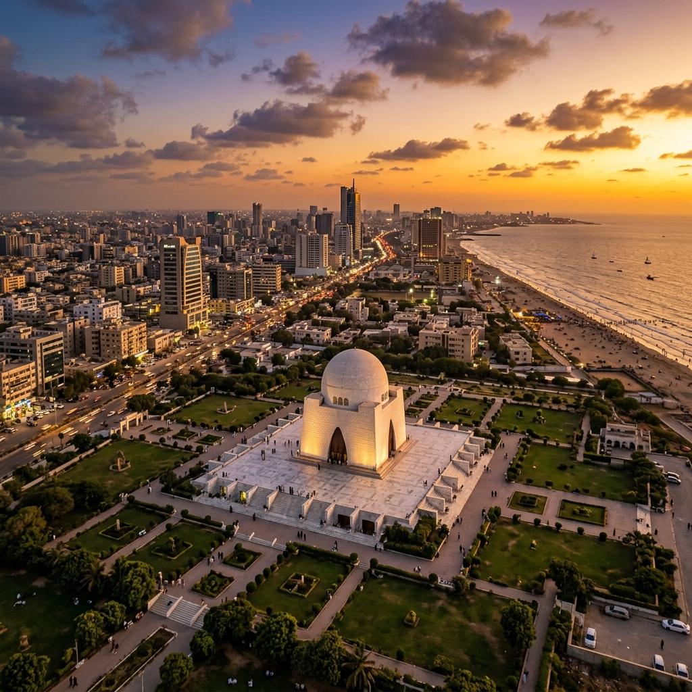
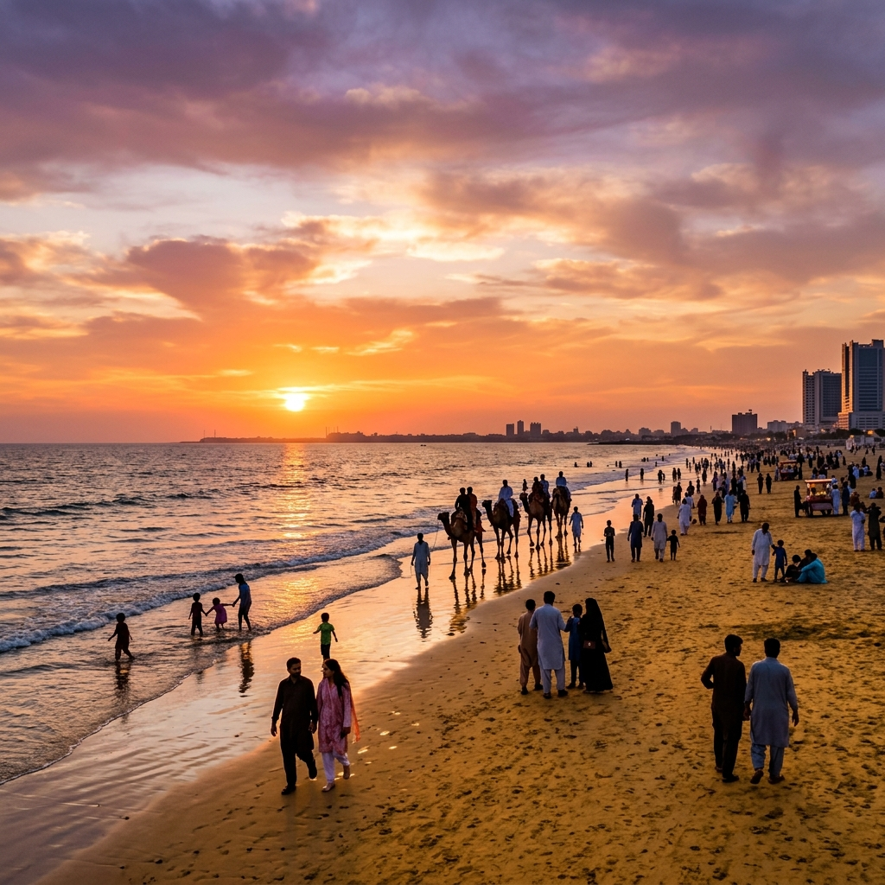
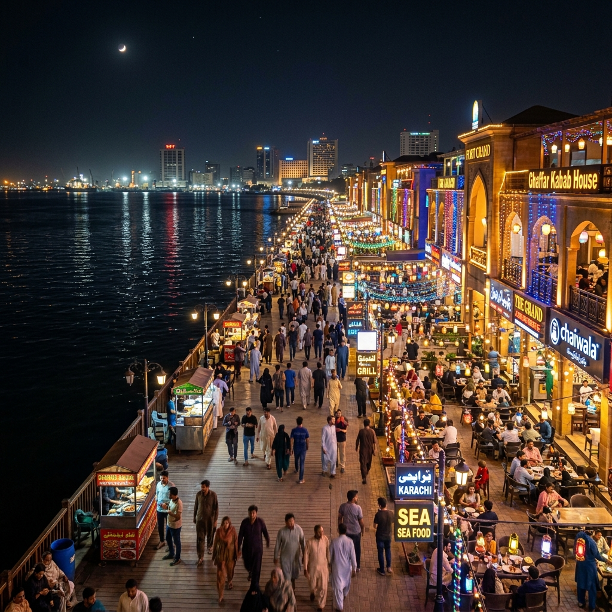

🏛️ Heritage
Mazar-e-Quaid
The white marble tomb of Muhammad Ali Jinnah, founder of Pakistan. A symbol of national pride and architectural grandeur set among geometric gardens.
Discover Pakistan's most beautiful tourist destinations.

Karachi isn't just a city — it's a universe. Home to over 16 million people speaking dozens of languages, this sprawling metropolis on the Arabian Sea is Pakistan's economic engine, cultural melting pot, and the gateway to the world. From the neon-lit streets of Saddar to the serene shores of Sandspit Beach, Karachi defies a single identity.
Once a small fishing village called Kolachi, this city has transformed into one of the world's fastest-growing megacities. Its port handles 95% of Pakistan's foreign trade, its stock exchange drives the national economy, and its food — oh, the food — is the stuff of legend.

From grand mausoleums to moonlit beaches — Karachi has it all.

The white marble tomb of Muhammad Ali Jinnah, founder of Pakistan. A symbol of national pride and architectural grandeur set among geometric gardens.
Where Karachiites escape the chaos. Camel rides, horse carriages, and the most spectacular sunsets you'll ever witness over the Arabian Sea.

South Asia's largest food and entertainment complex. A waterfront paradise with 50+ restaurants, live music, and a carnival atmosphere every night.
A pink sandstone masterpiece from 1927. This former royal residence now houses exquisite art collections, showcasing Pakistan's rich artistic heritage.
A Victorian-era market built in 1889. A sensory overload of spices, fabrics, antiques, and the raw energy of Karachi's trade roots.
Pakistan's most iconic modern landmark. With twin towers and a luxury mall, it represents Karachi's ambitious leap into the future.
Karachi's streets serve flavors you'll dream about for years.
The Karachi burger — spiced lentil patty, chutneys, and a toasted bun. Pure street magic at ₨50.
Slow-cooked overnight beef stew with bone marrow. Best eaten at 6 AM with fresh naan.
Freshly caught prawns, crabs, and lobsters grilled right at the harbor. The freshest you'll ever taste.
Legendary sajji, tikka, and mutton chops. Every table is a feast, every bite is an event.
Thick rabri cream with rose syrup, vermicelli, and ice cream. The ultimate Karachi dessert experience.
Doodh patti chai at midnight with friends. This isn't tea — it's a Karachi lifestyle ritual.
A city forged by centuries of trade, conquest, and resilience.
A small fishing settlement named after Mai Kolachi, a legendary fisherwoman who braved the sea and tamed the coast.
The British East India Company seized Karachi, transforming it into a major military and trading port of the Raj.
Pakistan was born, and Karachi became its first capital. Millions of migrants flooded in, shaping its multicultural DNA forever.
Islamabad replaced Karachi as the capital, but the city only grew more powerful as Pakistan's undisputed economic hub.
Skyscrapers, stock markets, and a tech boom. Karachi enters the 21st century as a megacity of ambition and unstoppable energy.
Home to 16+ million dreamers. Karachi keeps reinventing itself — louder, bolder, and more alive than ever.
Everything you need to know before visiting.
| Detail | Information |
|---|---|
| Province | Sindh |
| Climate | Tropical / Arid — Hot summers (35°C+), mild winters (15°C) |
| Languages | Urdu, Sindhi, Pashto, Balochi, Punjabi, English |
| Economy | Contributes ~25% of Pakistan's GDP — Financial & Industrial Hub |
| Airport | Jinnah International Airport (KHI) |
| Port | Port of Karachi — handles 95% of Pakistan's foreign trade |
| Sports | National Stadium — Pakistan's largest cricket ground (34,228 capacity) |
| Universities | University of Karachi, NED, IBA, LUMS (Karachi Campus), Aga Khan |
See Karachi through the lens.
Pack your appetite, charge your camera, and brace yourself for the most electrifying city in South Asia. Karachi doesn't just welcome you — it consumes you.